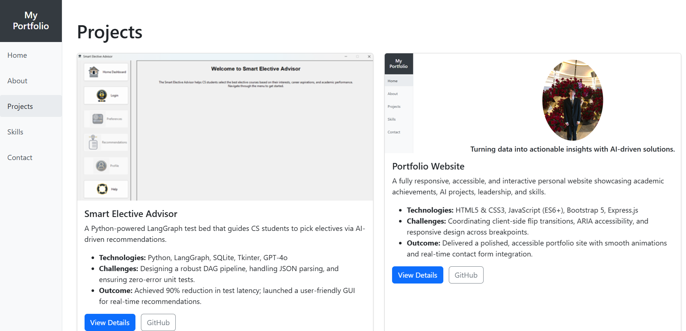

Portfolio Website
A fully responsive, accessible, and interactive personal website for showcasing academic achievements, AI engineering projects, leadership, and skills. Built with modern front-end technologies, the site integrates smooth transitions, mobile-friendly navigation, and real-time contact handling.
Description
The Portfolio Website is a single-page application-style portfolio built using HTML5, CSS3, JavaScript (ES6+), and Bootstrap 5. The website consists of multiple modular sections: Home, About, Projects, Skills, and Contact. Each page integrates accessibility best practices (ARIA roles and attributes), clean UI architecture using Flexbox/Grid, and smooth animated transitions driven by CSS and JavaScript event listeners.
The codebase supports dynamic routing animations via transitionend, and localStorage remembers the menu state across refreshes. The contact.html form integrates with a custom Express.js backend (server.js) to log and simulate message handling through an API call.
JavaScript is structured with Sphinx-style documentation blocks and adheres to a modular, readable format that separates responsibilities (DOM manipulation, transitions, and API interaction). The project supports real-time navigation using client-side animations and progressive enhancement for mobile compatibility.
Screenshots
Home View
About View

Projects View
Skills View
Contact View
Technologies Used
- HTML5 & CSS3 — Semantic structure and responsive design with custom styling
- Bootstrap 5 — Component library for layout, spacing, and forms
- JavaScript (ES6+) — Core logic for transitions, events, animations, and form handling
- Flexbox & CSS Grid — Responsive layout and alignment
- Express.js — Lightweight backend for handling contact form POST requests
- Sphinx-style Comments — Code documentation for maintainability
- ARIA Attributes — Enhanced accessibility for navigation and menus
Features
- Responsive Sidebar Navigation — Hamburger menu toggles on mobile view; sidebar remains accessible and persistent.
- Client-Side Flip Animation — Pages such as projects.html and project1.html flip using rotateY transitions during navigation. Controlled by main.js using transitionend.
- Smooth Enter/Exit Transitions — CSS classes like page-enter and page-exit are toggled via JavaScript to animate full-page views.
- Contact Form Handling — contact.html sends a POST request to /api/contact; error handling and success notifications are managed via fetch() with async/await.
- Persistent UI State with localStorage — Mobile menu remembers its open/closed state across sessions.
- Accessibility Enhancements — ARIA labels and roles added to menu, nav, and buttons for screen reader compatibility.
- Sphinx-Style JS Documentation — Every logical section in main.js includes header-style docstrings to outline intent and structure.
- Skills and Projects Showcased — Reusable card components list technologies, tools, and outcomes from major projects, including the Smart Elective Advisor.
Challenges & Solutions
- Transition Coordination — Implemented transitionend listeners with requestAnimationFrame() to ensure animations complete before redirection, avoiding broken flip animations and white flash artifacts.
- Accessibility with Dynamic Elements — Used aria-expanded, aria-hidden, and proper role attributes to ensure full keyboard and screen reader support for mobile nav.
- Mobile Responsiveness — Customized Bootstrap with CSS Grid for a better column layout on narrow screens; integrated @media queries to hide/show elements appropriately.
- Page Load Animation Syncing — Managed popstate and pageshow events to replay animations when users click the Back button.
- Form UX & Robustness — Integrated robust validation and error feedback for form submission, complete with error logging for backend failures.
Outcome
Delivered a highly polished, fully accessible personal branding website with:
- üîÑ Fluid flip animation between major pages (projects.html ‚áå project1.html)
- ü߆ Clear representation of AI engineering and academic achievements
- üì± Optimized mobile navigation and contact form
- üì¢ Integrated Express server to handle form POST requests
- üóÇÔ∏è Maintained clean, scalable, and well-documented code across HTML, CSS, and JS